如何设计一个可重入的分布式锁，用什么结构设计？
可重入锁允许同一线程在持有锁的情况下多次获得锁而不会产生死锁。当线程请求锁时，如果它已经拥有了该锁，则可以直接获得锁，锁的计数器会增加。在释放锁时，计数器会减少，只有当计数器为零时，锁才会真正释放。
在分布式系统中，通常会使用诸如 Redis、Zookeeper 或 etcd 等组件来实现锁的管理。下面以 Redis 为例，简单描述如何设计一个可重入的分布式锁。
设计要素：
- 锁的标识符（Lock ID）：用于标识锁的唯一性。
- 持有者标识（Owner ID）：线程或进程的唯一标识符，通常是线程的 ID 或进程的 ID。
- 计数器：记录当前持有锁的次数。
- 过期时间：为了避免死锁，锁需要设定一个合理的超时时间。
我们可以在 Redis 中使用一个哈希表或简单的键值对来存储锁的状态。使用一个 key（如 lock:<resource>）来表示锁，包含以下字段：
-
owner: 当前持有锁的线程/进程标识符 -
count: 当前计数器，表示获得锁的次数 -
expires_at: 锁的到期时间，用于防止死锁
示例数据结构
{
"key": "lock:resource_1",
"value": {
"owner": "thread_id_or_process_id",
"count": 3,
"expires_at": "2023-10-01T12:00:00Z"
}
}
以下是围绕这个锁结构的基本操作：
- 获取锁 (Lock Acquisition)：尝试设置 lock: 的值，如果这个 key 不存在（即没有锁），那么可以创建该 key，并设置 owner 为当前线程/进程的唯一ID，count 设为 1，expires_at 设为当前时间加上锁的过期时间。如果该 key 已存在且 owner 是当前线程/进程的 ID，则增加 count 并更新 expires_at。
- 释放锁 (Lock Release)：检查当前的 owner 是否是当前线程/进程的 ID。如果是，减少 count。如果 count 减少到 0，则删除该 key。如果在持有锁的情况下，锁已过期，系统会根据 expires_at 检查锁是否可释放，避免死锁。
- 锁续期 (Lock Renewal)：如果当前线程在执行过程中需要继续持有锁，可以在逻辑处理中重新设置 expires_at.
- 超时与故障恢复：可以设置锁的自动超时时间，例如，设定一个最大持锁时间，超时后锁自动释放。这可以在一定程度上防止死锁的情况。
整体流程示例
-
获取锁：线程A调用获取锁的 API。如果成功，返回锁的状态。如果线程B也尝试获取同一把锁，则会返回锁已被占用。
-
释放锁：线程A在完成任务时调用释放锁的 API，递减
count字段。如果count达到 0，删除锁并释放资源。 -
续约锁：线程A在处理过程中可以根据需要续约锁，更新
expires_at。
场景题：你认为你所在的城市有多少个加油站
我所在的城市是北京,首先，明确问题：求北京地区加油站的数量。
然后建立拆解公式，加油站是供给方，而有车一族是需求方，假设市场供需平衡，我们可以从需求方去估算加油站数量。
加油站的数量 = 每天需要加油的车辆数/每个加油站每天可加油的车辆数`，接着又可以进一步拆分。
每天需要加油的车辆数与北京车辆数和车的加油周期有关，北京车辆数可以通过北京常住人口数估算得到，北京人口数已知（约2000万），假设每个家庭有4个人，每个家庭有一辆车，每辆车五天加一次油，则每天需要加油的车辆数 = 2000W/4/5 = 100。
当然如果要考虑再细一点，不同家庭人数可以分层，按比例计算，每个家庭车辆数也可以深究，每辆车几天加一次油也可以分层，这些条件及假设，在过程中也可以提出和表明。
每个加油站每天可加油车辆数可以通过加油站加油桩数量，加油效率，作业时间来估算，如每个桩加一次油需要5分钟，每天可以作业14小时，根据时间段可拆为8小时加油桩利用率为80%，另外6小时加油桩利用率为30%，加油站平均有4个加油桩，则每个加油站每天可加油车辆数 = 8/(5/60)0.84+6/(5/60)0.34=392个
据此可以估算加油站的数量 = 100万/392 = 2551个
场景题：
- 设计短链系统
如何设计一个秒杀场景？
秒杀场景的核心特点是高并发、低库存、短时间爆发式访问 。因此，设计时需要解决以下几个问题：
- 高并发处理 ：如何应对大量用户同时访问？
- 库存一致性 ：如何保证库存不会超卖或少卖？
- 用户体验 ：如何减少用户等待时间，避免页面崩溃？
- 防刷机制 ：如何防止恶意用户利用脚本抢购商品？
面对上面这些问题，可以针对每一层做一些设计：
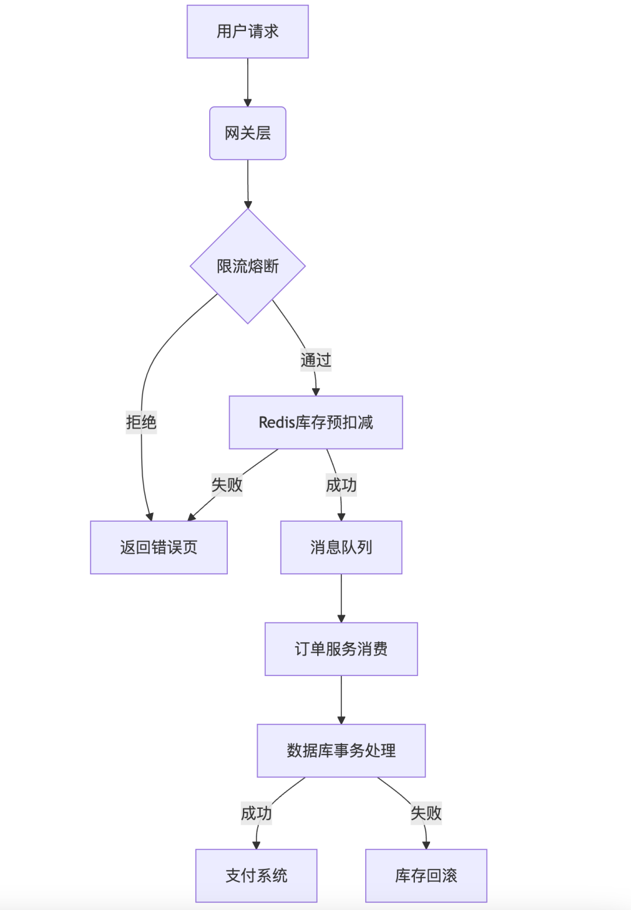
1、前端层：
- 静态资源分离 ：将秒杀页面的静态资源（如HTML、CSS、JS）部署到CDN（内容分发网络），减轻服务器压力。
- 请求拦截：活动未开始时，前端按钮置灰；通过验证码、点击频率限制。
2、网关层：
- 流量拦截 ：使用API网关对请求进行初步过滤，例如IP限流、黑名单拦截等。
- 身份验证 ：通过Token或签名验证用户身份，防止未登录用户直接访问秒杀接口。
3、缓存层：
- Redis缓存库存 ：将商品库存信息存储在Redis中，利用其高性能特性处理库存扣减操作。
- 预热数据 ：在秒杀活动开始前，将商品信息和库存数据加载到Redis中，减少数据库压力。
4、消息队列：
- 削峰填谷 ：使用消息队列（如Kafka）将用户的秒杀请求异步化，避免直接冲击后端服务。
- 订单处理 ：将成功的秒杀请求放入队列，由后台服务异步生成订单，提高系统吞吐量。
5、数据库层
- 乐观锁：在库存扣减时，使用乐观锁确保库存一致性。
- 读写分离 ：通过主从复制实现数据库的读写分离，提升查询性能。
关键的核心业务逻辑实现，库存防超卖方案采用：Redis原子操作 + 异步扣减数据库
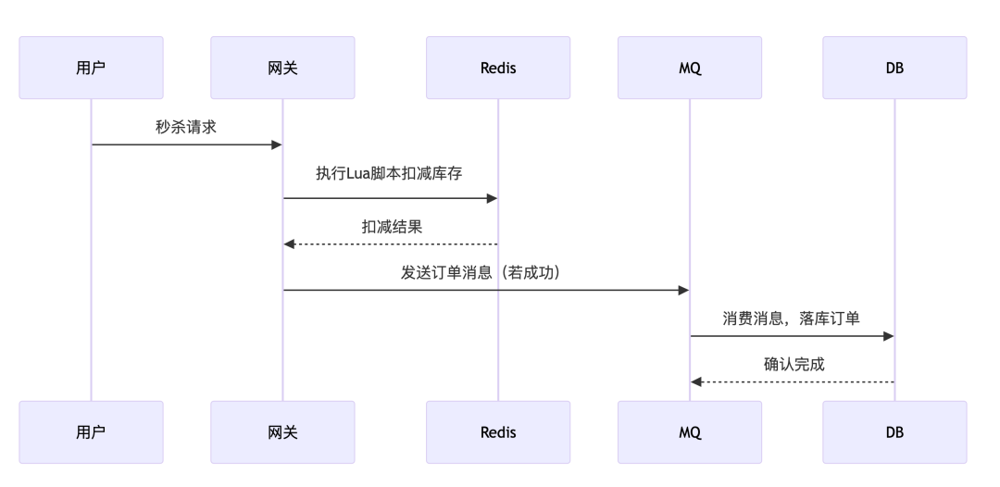
具体流程如下：
- 秒杀请求达到：用户发起秒杀请求，系统接收到请求后，首先进行一些基础校验（如用户身份验证、活动是否开始等）。如果校验通过，进入库存扣减逻辑。
-
Redis库存扣减：在Redis中检查商品库存是否充足。例如，使用
GET命令获取当前库存数量。如果库存不足，直接返回失败，结束流程。如果库存充足，使用Redis的原子操作（如DECR或Lua脚本）扣减库存。 - 异步更新数据库：如果Redis库存扣减成功，生成一个秒杀成功的消息，并将其放入消息队列
- 后台服务消费消息：后台服务从消息队列中消费秒杀成功的消息，执行以下操作：1、为用户创建订单记录；2、使用乐观锁将数据库中的库存数量减少1；3、通过唯一标识（如用户ID+商品ID+时间戳）防止重复消费。
- 最终一致性校验：在Redis库存扣减和数据库库存更新之间，可能会存在短暂的不一致状态。为了保证最终一致性，可以采取以下措施：1、定期将Redis中的库存数据与数据库进行同步。2、如果发现Redis和数据库库存不一致，触发补偿逻辑（如回滚订单或调整库存）。
给你一个场景吧，在支付界面让用户同时选择支付宝和微信支付，但是用户点了微信，这个时候网卡了，又点了支付宝，这个时候如何保证用户不重复付款
前端页面变灰，或者执行支付逻辑之前先加锁，返回给前端成功再释放锁
还有别的方案呢？前端往往是不可信的
不知道了
多线程打印奇偶数，怎么控制打印的顺序
可以利用wait()和notify()来控制线程的执行顺序。以下是一个基于这种方法的简单示例：
public class PrintOddEven {
private static final Object lock = new Object();
private static int count = 1;
private static final int MAX_COUNT = 10;
public static void main(String[] args) {
Runnable printOdd = () -> {
synchronized (lock) {
while (count <= MAX_COUNT) {
if (count % 2 != 0) {
System.out.println(Thread.currentThread().getName() + ": " + count++);
lock.notify();
} else {
try {
lock.wait();
} catch (InterruptedException e) {
e.printStackTrace();
}
}
}
}
};
Runnable printEven = () -> {
synchronized (lock) {
while (count <= MAX_COUNT) {
if (count % 2 == 0) {
System.out.println(Thread.currentThread().getName() + ": " + count++);
lock.notify();
} else {
try {
lock.wait();
} catch (InterruptedException e) {
e.printStackTrace();
}
}
}
}
};
Thread oddThread = new Thread(printOdd, "OddThread");
Thread evenThread = new Thread(printEven, "EvenThread");
oddThread.start();
evenThread.start();
}
}
在上面的示例中，通过一个共享的锁对象lock来控制两个线程的交替执行。一个线程负责打印奇数，另一个线程负责打印偶数，通过wait()和notify()方法来在两个线程之间实现顺序控制。当当前应该打印奇数时，偶数线程会进入等待状态，反之亦然。
常见的限流算法你知道哪些？？
- 滑动窗口限流算法是对固定窗口限流算法的改进，有效解决了窗口切换时可能会产生两倍于阈值流量请求的问题。
- 漏桶限流算法能够对流量起到整流的作用，让随机不稳定的流量以固定的速率流出，但是不能解决流量突发的问题。
- 令牌桶算法作为漏斗算法的一种改进，除了能够起到平滑流量的作用，还允许一定程度的流量突发。
固定窗口限流算法
固定窗口限流算法就是对一段固定时间窗口内的请求进行计数，如果请求数超过了阈值，则舍弃该请求；如果没有达到设定的阈值，则接受该请求，且计数加1。当时间窗口结束时，重置计数器为0。

固定窗口限流优点是实现简单，但是会有“流量吐刺”的问题，假设窗口大小为1s，限流大小为100，然后恰好在某个窗口的第999ms来了100个请求，窗口前期没有请求，所以这100个请求都会通过。再恰好，下一个窗口的第1ms有来了100个请求，也全部通过了，那也就是在2ms之内通过了200个请求，而我们设定的阈值是100，通过的请求达到了阈值的两倍，这样可能会给系统造成巨大的负载压力。

滑动窗口限流算法
改进固定窗口缺陷的方法是采用滑动窗口限流算法，滑动窗口就是将限流窗口内部切分成一些更小的时间片，然后在时间轴上滑动，每次滑动，滑过一个小时间片，就形成一个新的限流窗口，即滑动窗口。然后在这个滑动窗口内执行固定窗口算法即可。
滑动窗口可以避免固定窗口出现的放过两倍请求的问题，因为一个短时间内出现的所有请求必然在一个滑动窗口内，所以一定会被滑动窗口限流。

漏桶限流算法
漏桶限流算法是模拟水流过一个有漏洞的桶进而限流的思路，如图。

水龙头的水先流入漏桶，再通过漏桶底部的孔流出。如果流入的水量太大，底部的孔来不及流出，就会导致水桶太满溢出去。
从系统的角度来看，我们不知道什么时候会有请求来，也不知道请求会以多大的速率来，这就给系统的安全性埋下了隐患。但是如果加了一层漏斗算法限流之后，就能够保证请求以恒定的速率流出。在系统看来，请求永远是以平滑的传输速率过来，从而起到了保护系统的作用。
使用漏桶限流算法，缺点有两个：
- 即使系统资源很空闲，多个请求同时到达时，漏桶也是慢慢地一个接一个地去处理请求，这其实并不符合人们的期望，因为这样就是在浪费计算资源。
- 不能解决流量突发的问题，假设漏斗速率是2个/秒，然后突然来了10个请求，受限于漏斗的容量，只有5个请求被接受，另外5个被拒绝。你可能会说，漏斗速率是2个/秒，然后瞬间接受了5个请求，这不就解决了流量突发的问题吗？不，这5个请求只是被接受了，但是没有马上被处理，处理的速度仍然是我们设定的2个/秒，所以没有解决流量突发的问题
令牌桶限流算法
令牌桶是另一种桶限流算法，模拟一个特定大小的桶，然后向桶中以特定的速度放入令牌（token），请求到达后，必须从桶中取出一个令牌才能继续处理。如果桶中已经没有令牌了，那么当前请求就被限流。如果桶中的令牌放满了，令牌桶也会溢出。
令牌的动作是持续不断进行的，如果桶中令牌数达到上限，则丢弃令牌，因此桶中可能一直持有大量的可用令牌。此时请求进来可以直接拿到令牌执行。比如设置 qps 为 100，那么限流器初始化完成 1 秒后，桶中就已经有 100 个令牌了，如果此前还没有请求过来，这时突然来了 100 个请求，该限流器可以抵挡瞬时的 100 个请求。由此可见，只有桶中没有令牌时，请求才会进行等待，最终表现的效果即为以一定的速率执行。令牌桶的示意图如下：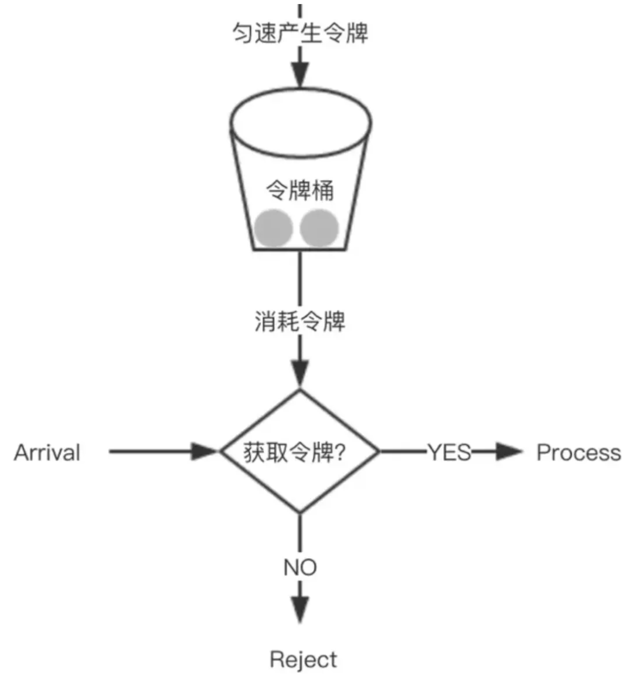
令牌桶限流算法综合效果比较好，能在最大程度利用系统资源处理请求的基础上，实现限流的目标，建议通常场景中优先使用该算法。
思考题：抛硬币，先抛到正面算赢，否则轮流抛。问先抛的人获胜的概率。
读者答：阿巴阿巴……考虑一轮，（正，-）（反，正）（反，反），其中，（正，-）可以还原成（正，正）（正，）两份，而（反，反）相当于再来一次，这样（正，-）占2份，（反，正）占1份，赢的概率就算2/3
线上项目，没有日志，没后台数据的情况下怎么找出问题？
- 根据用户反馈的信息，尝试在测试环境或本地环境中重现问题。通过模拟用户的操作步骤，可能会发现一些在生产环境中难以察觉的问题。如果能够重现问题，就可以更方便地进行调试和分析。
- 如果问题是在某个版本发布后出现的，对比当前线上版本与之前正常工作的版本之间的代码差异。查看是否有引入新的功能、修改了配置或依赖关系等，这些变化可能导致了问题的出现。
- 可以通过生成Heap Dump或者线程转储来分析。例如，使用jstack、jmap这些JDK工具。或者使用Arthas的监控命令，实时查看方法执行情况。还要考虑到网络问题，比如是否有外部服务调用失败，或者资源耗尽的情况，比如数据库连接池满了。这时候可能需要检查系统资源，如CPU、内存、磁盘IO、网络流量等，使用top、netstat、ss等命令。
看你项目用了策略模式，介绍一下策略模式？
策略模式是一种行为设计模式，它能让你定义一系列算法，并将每个算法封装起来，使它们可以相互替换。策略模式让算法的变化独立于使用算法的客户端。在 Java 里，策略模式的实现通常涉及以下几个角色：
- 策略接口（Strategy）：定义所有支持的算法的公共接口。
- 具体策略类（Concrete Strategy）：实现策略接口，包含具体的算法。
- 上下文类（Context）：持有一个策略接口的引用，负责根据需要选择和使用具体的策略。
假设你要实现一个简单的计算器，它支持加法、减法和乘法运算。你可以使用策略模式来实现这个计算器。
// 策略接口
interface OperationStrategy {
int doOperation(int num1, int num2);
}
// 具体策略类：加法
class AdditionStrategy implements OperationStrategy {
@Override
public int doOperation(int num1, int num2) {
return num1 + num2;
}
}
// 具体策略类：减法
class SubtractionStrategy implements OperationStrategy {
@Override
public int doOperation(int num1, int num2) {
return num1 - num2;
}
}
// 具体策略类：乘法
class MultiplicationStrategy implements OperationStrategy {
@Override
public int doOperation(int num1, int num2) {
return num1 * num2;
}
}
// 上下文类
class Calculator {
private OperationStrategy strategy;
public Calculator(OperationStrategy strategy) {
this.strategy = strategy;
}
public void setStrategy(OperationStrategy strategy) {
this.strategy = strategy;
}
public int executeOperation(int num1, int num2) {
return strategy.doOperation(num1, num2);
}
}
// 客户端代码
publicclass StrategyPatternDemo {
public static void main(String[] args) {
// 创建加法策略
OperationStrategy addition = new AdditionStrategy();
Calculator calculator = new Calculator(addition);
// 执行加法运算
int result = calculator.executeOperation(5, 3);
System.out.println("5 + 3 = " + result);
// 切换到减法策略
OperationStrategy subtraction = new SubtractionStrategy();
calculator.setStrategy(subtraction);
// 执行减法运算
result = calculator.executeOperation(5, 3);
System.out.println("5 - 3 = " + result);
// 切换到乘法策略
OperationStrategy multiplication = new MultiplicationStrategy();
calculator.setStrategy(multiplication);
// 执行乘法运算
result = calculator.executeOperation(5, 3);
System.out.println("5 * 3 = " + result);
}
}
-
策略接口（
OperationStrategy）：定义了一个doOperation方法，用于执行具体的运算。 -
具体策略类（
AdditionStrategy、SubtractionStrategy、MultiplicationStrategy）：实现了OperationStrategy接口，分别实现了加法、减法和乘法运算。 -
上下文类（
Calculator）：持有一个OperationStrategy接口的引用，通过setStrategy方法可以动态切换策略，executeOperation方法调用具体策略的doOperation方法来执行运算。 -
客户端代码（
StrategyPatternDemo）：创建了不同的具体策略对象，并将它们传递给Calculator对象，通过调用executeOperation方法执行不同的运算。
策略模式优势是可以轻松添加新的策略类，而不需要修改现有的代码，每个策略类都有自己的职责，代码结构清晰，易于维护。
10. 手撕：单例模式
public class SingleTon {
// volatile 关键字修饰变量 防止指令重排序
privatestaticvolatile SingleTon instance = null;
private SingleTon(){}
public static SingleTon getInstance(){
if(instance == null){
//同步代码块 只有在第一次获取对象的时候会执行到 ，第二次及以后访问时 instance变量均非null故不会往下执行了 直接返回啦
synchronized(SingleTon.class){
if(instance == null){
instance = new SingleTon();
}
}
}
return instance;
}
}
正确的双重检查锁定模式需要需要使用 volatile。volatile主要包含两个功能。
- 保证可见性。使用 volatile 定义的变量，将会保证对所有线程的可见性。
- 禁止指令重排序优化。
由于 volatile 禁止对象创建时指令之间重排序，所以其他线程不会访问到一个未初始化的对象，从而保证安全性。
高并发的场景下保证数据库和缓存一致性？
对于读数据，我会选择旁路缓存策略，如果 cache 不命中，会从 db 加载数据到 cache。对于写数据，我会选择更新 db 后，再删除缓存。
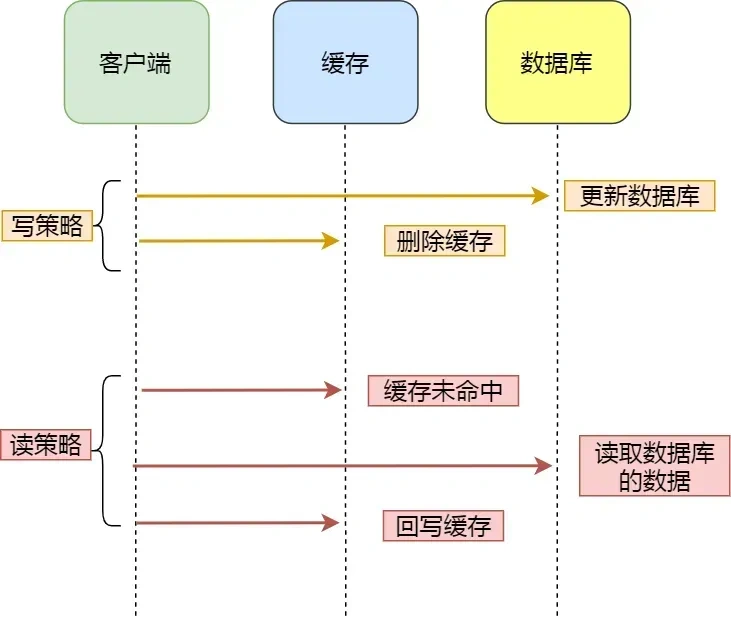
缓存是通过牺牲强一致性来提高性能的。这是由CAP理论决定的。缓存系统适用的场景就是非强一致性的场景，它属于CAP中的AP。所以，如果需要数据库和缓存数据保持强一致，就不适合使用缓存。
所以使用缓存提升性能，就是会有数据更新的延迟。这需要我们在设计时结合业务仔细思考是否适合用缓存。然后缓存一定要设置过期时间，这个时间太短、或者太长都不好：
- 太短的话请求可能会比较多的落到数据库上，这也意味着失去了缓存的优势。
- 太长的话缓存中的脏数据会使系统长时间处于一个延迟的状态，而且系统中长时间没有人访问的数据一直存在内存中不过期，浪费内存。
但是，通过一些方案优化处理，是可以最终一致性的。
针对删除缓存异常的情况，可以使用 2 个方案避免：
- 删除缓存重试策略（消息队列）
- 订阅 binlog，再删除缓存（Canal+消息队列）
消息队列方案
我们可以引入消息队列，将第二个操作（删除缓存）要操作的数据加入到消息队列，由消费者来操作数据。
- 如果应用删除缓存失败，可以从消息队列中重新读取数据，然后再次删除缓存，这个就是重试机制。当然，如果重试超过的一定次数，还是没有成功，我们就需要向业务层发送报错信息了。
- 如果删除缓存成功，就要把数据从消息队列中移除，避免重复操作，否则就继续重试。
举个例子，来说明重试机制的过程。
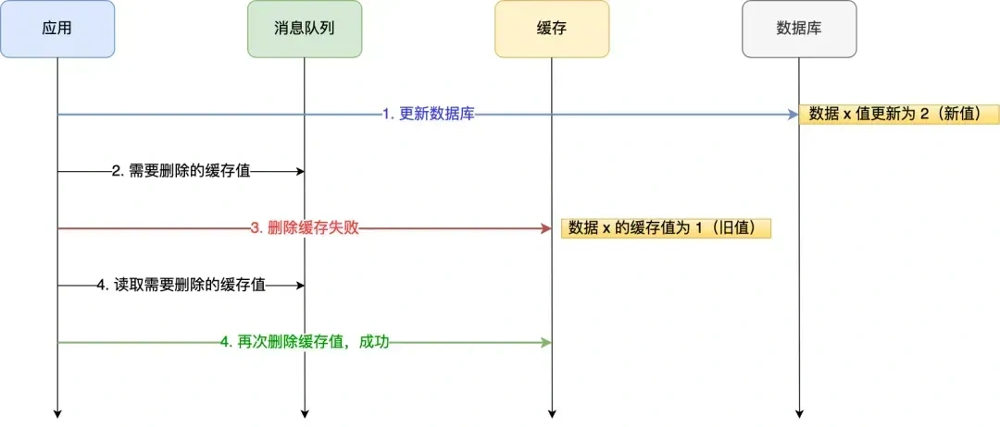
重试删除缓存机制还可以，就是会造成好多业务代码入侵。
订阅 MySQL binlog，再操作缓存
「先更新数据库，再删缓存」的策略的第一步是更新数据库，那么更新数据库成功，就会产生一条变更日志，记录在 binlog 里。
于是我们就可以通过订阅 binlog 日志，拿到具体要操作的数据，然后再执行缓存删除，阿里巴巴开源的 Canal 中间件就是基于这个实现的。
Canal 模拟 MySQL 主从复制的交互协议，把自己伪装成一个 MySQL 的从节点，向 MySQL 主节点发送 dump 请求，MySQL 收到请求后，就会开始推送 Binlog 给 Canal，Canal 解析 Binlog 字节流之后，转换为便于读取的结构化数据，供下游程序订阅使用。
下图是 Canal 的工作原理：
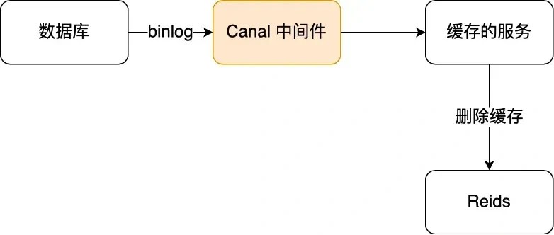
将binlog日志采集发送到MQ队列里面，然后编写一个简单的缓存删除消息者订阅binlog日志，根据更新log删除缓存，并且通过ACK机制确认处理这条更新log，保证数据缓存一致性
使用消息队列还应该注意哪些问题？
需要考虑消息可靠性和顺序性方面的问题。
消息队列的可靠性、顺序性怎么保证？
消息可靠性可以通过下面这些方式来保证
-
消息持久化：确保消息队列能够持久化消息是非常关键的。在系统崩溃、重启或者网络故障等情况下，未处理的消息不应丢失。例如，像 RabbitMQ 可以通过配置将消息持久化到磁盘，通过将队列和消息都设置为持久化的方式（设置
durable = true），这样在服务器重启后，消息依然可以被重新读取和处理。 -
消息确认机制：消费者在成功处理消息后，应该向消息队列发送确认（acknowledgment）。消息队列只有收到确认后，才会将消息从队列中移除。如果没有收到确认，消息队列可能会在一定时间后重新发送消息给其他消费者或者再次发送给同一个消费者。以 Kafka 为例，消费者通过
commitSync或者commitAsync方法来提交偏移量（offset），从而确认消息的消费。 - 消息重试策略：当消费者处理消息失败时，需要有合理的重试策略。可以设置重试次数和重试间隔时间。例如，在第一次处理失败后，等待一段时间（如 5 秒）后进行第二次重试，如果重试多次（如 3 次）后仍然失败，可以将消息发送到死信队列，以便后续人工排查或者采取其他特殊处理。
消息顺序性保证的方式如下：
- 有序消息处理场景识别：首先需要明确业务场景中哪些消息是需要保证顺序的。例如，在金融交易系统中，对于同用户的转账操作顺序是不能打乱的。对于需要顺序处理的消息，要确保消息队列和消费者能够按照特定的顺序进行处理。
- 消息队列对顺序性的支持：部分消息队列本身提供了顺序性保证的功能。比如 Kafka 可以通过将消息划分到同一个分区（Partition）来保证消息在分区内是有序的，消费者按照分区顺序读取消息就可以保证消息顺序。但这也可能会限制消息的并行处理程度，需要在顺序性和吞吐量之间进行权衡。
- 消费者顺序处理策略：消费者在处理顺序消息时，应该避免并发处理可能导致顺序打乱的情况。例如，可以通过单线程或者使用线程池并对顺序消息进行串行化处理等方式，确保消息按照正确的顺序被消费。
秒杀系统设计如何做？
系统架构分层设计如下。
前端层：
- 页面静态化：将商品展示页面等静态内容进行缓存，用户请求时可以直接从缓存中获取，减少服务器的渲染压力。例如，使用内容分发网络（CDN）缓存商品图片、详情介绍等静态资源。
- 防刷机制：通过验证码、限制用户请求频率等方式防止恶意刷请求。例如，在秒杀开始前要求用户输入验证码，并且在一定时间内限制单个用户的请求次数，如每秒最多允许 3 次请求。
应用层：
- 负载均衡：采用负载均衡器将用户请求均匀地分配到多个后端服务器，避免单点服务器过载。如使用 Nginx 作为负载均衡器，根据服务器的负载情况和性能动态分配请求。
- 服务拆分与微服务化：将秒杀系统的不同功能模块拆分成独立的微服务，如用户服务、商品服务、订单服务等。这样可以独立部署和扩展各个模块，提高系统的灵活性和可维护性。
- 缓存策略：在应用层使用缓存来提高系统性能。例如，使用 Redis 缓存商品库存信息，用户下单前先从 Redis 中查询库存，减少对数据库的直接访问。
数据层：
- 数据库优化：对数据库进行性能优化，如数据库索引优化、SQL 语句优化等。对于库存表，可以为库存字段添加索引，加快库存查询和更新的速度。
- 数据库集群与读写分离：采用数据库集群来提高数据库的处理能力，同时进行读写分离。将读操作（如查询商品信息）和写操作（如库存扣减、订单生成）分布到不同的数据库节点上，提高系统的并发处理能力。
高并发场景下扣减库存的方式：
- 预扣库存：在用户下单时，先预扣库存，将库存数量在缓存（如 Redis）中进行减 1 操作。同时设置一个较短的过期时间，如 1 - 2 分钟。如果用户在过期时间内完成支付，正式扣减库存；如果未完成支付，库存自动回补。
- 异步更新数据库：通过 Redis 判断之后，去更新数据库的请求都是必要的请求，这些请求数据库必须要处理，但是如果数据库还是处理不过来这些请求怎么办呢？这个时候就可以考虑削峰填谷操作了，削峰填谷最好的实践就是 MQ 了。经过 Redis 库存扣减判断之后，我们已经确保这次请求需要生成订单，我们就可以通过异步的形式通知订单服务生成订单并扣减库存。
-
数据库乐观锁防止超卖：更新数据库减库存的时候，采用乐观锁方式，进行库存限制条件，
update goods set stock = stock - 1 where goods_id = ? and stock >0
设计题：订单到了半个小时，半个小时未支付就取消
有多种实现订单超时自动取消的技术方案，包括定时轮询、JDK的延迟队列、时间轮算法、Redis实现以及MQ消息队列中的延迟队列和死信队列。
- 定时轮询：基于SpringBoot的Scheduled实现，通过定时任务扫描数据库中的订单。优点是实现简单直接，但缺点是会给数据库带来持续压力，处理效率受任务执行间隔影响较大，且在高并发场景下可能引发并发问题和资源浪费。
- JDK的延迟队列（DelayQueue）：基于优先级队列实现，减少数据库访问，提供高效的任务处理。优点是内部数据结构高效，线程安全。缺点是所有待处理订单需保留在内存中，可能导致内存消耗大，且无持久化机制，系统崩溃时可能丢失数据。
- 时间轮算法：通过时间轮结构实现定时任务调度，能高效处理大量定时任务，提供精确的超时控制。优点是实现简单，执行效率高，且有成熟实现库。缺点同样是内存占用和崩溃时数据丢失的问题。
- Redis实现：
- 有序集合（Sorted Set）：利用有序集合的特性，定时轮询查找已超时的任务。优点是查询效率高，适用于分布式环境，减少数据库压力。缺点是依赖定时任务执行频率，处理超时订单的实时性受限，且在处理事务一致性方面需要额外努力。
- Key过期监听：利用Redis键过期事件自动触发订单取消逻辑。优点是实时性好，资源消耗少，支持高并发。缺点是对Redis服务的依赖性强，极端情况下处理能力可能成为瓶颈，且键过期有一定的不确定性。
- MQ消息队列：
- 延迟队列（如RabbitMQ的rabbitmq_delayed_message_exchange插件）：实现消息在指定延迟后送达处理队列。优点是处理高效，异步执行，易于扩展，模块化程度高。缺点是高度依赖消息队列服务，配置复杂度增加，可能涉及消息丢失或延迟风险，以及消息队列与数据库操作一致性问题。
- 死信队列：通过设置队列TTL将超时订单转为死信，由监听死信队列的消费者处理。优点是能捕获并隔离异常消息，实现业务逻辑分离，资源保护良好，方便追踪和分析问题。缺点是相比延迟队列，处理超时不够精确，配置复杂，且同样存在消息处理完整性及一致性问题。
不同方案各有优劣，实际应用中应根据系统的具体需求、资源状况以及技术栈等因素综合评估，选择最适合的方案。在许多现代大型系统中，通常会选择消息队列的延迟队列或死信队列方案，以充分利用其异步处理、资源优化和扩展性方面的优势。
12. 从前端页面到Java后台再到数据库，有一张表，表存在上百万条数据，从这三个层面，去做一个查询方面的优化，单表查询。
前端层面的优化：
- 分页显示数据：默认加载第一页，滚动到底部时自动加载下一页，每页返回 20~50 条数据，避免大体积传输。
- 预加载技术：用户访问第一页时，后台预加载后续页面的数据（需权衡服务器压力）。
-
缓存已查询数据：对已加载的分页结果进行前端缓存（如
localStorage或内存缓存），避免重复请求相同数据。
Java 后端层面的优化：
- 只返回必要字段，减少网络传输与反序列化开销。
- 对高频且变化不频繁的查询结果缓存起来，减少数据库的查询
数据库层面的优化：
-
创建合适的索引字段，比如可以考虑对高频查询字段（如
user_id、create_time）建立复合索引，这样就能索引字段覆盖查询所需数据，减少回表操作。 - 分页查询的优化，避免深度分页的问题：
-- 低效写法（offset 过大）
SELECT * FROM table ORDER BY id LIMIT 1000000, 10;
-- 高效写法：基于游标（上次查询的最大ID）
SELECT * FROM table WHERE id > 1000000 ORDER BY id LIMIT 10;
- 如果系统读操作远多于写操作，可以考虑实现读写分离，将读请求分发到多个从库上。
简单讲一下工厂模式，简单工厂，还有工厂方法，还有抽象工厂，这三个工厂就有什么区别呀？
工厂模式是一种创建对象的设计模式，主要用于封装对象的创建过程，使代码与具体产品解耦。工厂模式可以帮助管理和扩展对象的创建，同时遵循开闭原则（对扩展开放，对修改关闭）
-
简单工厂：
-
只有一个工厂类，接受参数决定创建具体产品。
-
不符合严格的设计原则，扩展性差。
-
工厂方法：
-
每个具体产品都有对应的工厂类，符合开闭原则。
-
允许用户自定义具体产品的创建过程，增加新的产品较为方便，但工厂的数量增加，系统复杂度提高。
-
抽象工厂：
-
提供接口创建一系列相关的产品，适合产品组合的场景。
-
提高了系统的灵活性和可扩展性，但要求开发者定义更复杂的接口和类层次结构。
讲一讲单例模式？它有什么线程不安全的地方，就是多线程的时候它会出现什么问题？
单例模式主要是确保一个类只有一个实例，并提供一个全局访问点，常用于控制对资源的访问，比如数据库连接、线程池等。
单例模式（非线程安全版本）
public class Singleton {
private static Singleton instance;
private Singleton() {}
public static Singleton getInstance() {
if (instance == null) {
instance = new Singleton();
}
return instance;
}
}
多线程时候存在的问题：
-
在多线程环境中，如果多个线程同时调用
getInstance方法，可能会导致创建多个Singleton实例。 -
例如，线程 A 检查到
instance为null，随后被上下文切换，线程 B 也检查到instance为null，并创建了第二个实例。
手写一个双重检查锁实现的单例，并讲解
public class SingleTon {
// volatile 关键字修饰变量 防止指令重排序
private static volatile SingleTon instance = null;
private SingleTon(){}
public static SingleTon getInstance(){
if(instance == null){
//同步代码块 只有在第一次获取对象的时候会执行到 ，第二次及以后访问时 instance变量均非null故不会往下执行了 直接返回啦
synchronized(SingleTon.class){
if(instance == null){
instance = new SingleTon();
}
}
}
return instance;
}
}
正确的双重检查锁定模式需要需要使用 volatile。volatile主要包含两个功能。
- 保证可见性。使用 volatile 定义的变量，将会保证对所有线程的可见性。
- 禁止指令重排序优化。
由于 volatile 禁止对象创建时指令之间重排序，所以其他线程不会访问到一个未初始化的对象，从而保证安全性。
7. 设计一个抢票软件，高并发过来的时候，做哪些设计去应对呢？
面对高并发抢票场景，我会构建分层防御体系与异步化架构。首先在流量入口部署Nginx集群进行三级拦截：第一级采用令牌桶算法限制全局QPS不超过10万，第二级通过Redis执行用户维度的频率控制，例如对每个用户ID执行INCR命令并设置5秒过期时间，超过每秒5次请求则直接拒绝，第三级引入动态人机验证，当检测到单IP每秒50次以上异常请求时强制弹出滑块验证码。这三层过滤可确保80%以上的无效流量在进入核心系统前被拦截。
核心业务采用异步解耦设计化解瞬时压力。当请求通过校验后，系统通过执行Redis Lua脚本实现原子化库存预扣减，例如先检查余票数量是否大于零再执行DECR操作，该操作在单节点可承载8万以上QPS。预扣减成功的请求会按车次ID哈希分区进入Kafka队列，此举将数据库写入压力从百万级压缩至万级。下游订单服务异步消费消息生成订单，此时数据库通过乐观锁保障最终一致性，执行UPDATE票表SET库存=库存-1 WHERE 票ID=101 AND 库存>0，同时设置Redis库存键15分钟过期以支持未支付回补。
在容灾层面实施动态降级策略。通过Sentinel实时监控系统负载，当Redis延迟超过50毫秒时自动切换至本地缓存库存计数器，虽然可能产生1%左右的超卖误差但保障系统不崩溃；针对热门车次实施物理隔离策略，将其路由到独立的Redis分片和专用线程池处理；MySQL压力达到阈值时主动返回排队页面，配合每2分钟执行的Redis与数据库库存对账程序修正数据偏差。
整套设计始终围绕四个核心原则：流量分层过滤确保系统不被冲垮，异步队列实现亿级流量到万级数据库写入的压缩，最终一致性平衡性能与准确率，动态降级提供柔性可用性。实测中该架构可在单节点承载8000QPS的压力下保持80毫秒内响应，将200万并发洪峰转化为可持续处理的业务流。
12. 手撕：三个线程循环打印1-100
实现思路：
-
线程协作：通过
wait()和notifyAll()实现线程间的同步。 -
共享状态：使用一个共享变量
current表示当前应该打印的数字，并通过取模运算（% 3）决定哪个线程应该执行打印。 -
线程安全：所有操作在
synchronized块中完成，避免竞态条件。
public class CyclicPrinting {
privatestaticfinalint MAX_NUMBER = 100;
privatestaticint current = 1; // 共享变量，表示当前应打印的数字
privatestaticfinal Object lock = new Object(); // 锁对象
public static void main(String[] args) {
// 创建三个线程
Thread threadA = new Thread(new Printer(0), "ThreadA");
Thread threadB = new Thread(new Printer(1), "ThreadB");
Thread threadC = new Thread(new Printer(2), "ThreadC");
// 启动线程
threadA.start();
threadB.start();
threadC.start();
}
staticclass Printer implements Runnable {
privatefinalint remainder; // 当前线程的标识（0、1、2）
public Printer(int remainder) {
this.remainder = remainder;
}
@Override
public void run() {
while (true) {
synchronized (lock) {
// 检查是否超过最大值
if (current > MAX_NUMBER) {
break;
}
// 如果当前线程不该打印，则等待
while (current % 3 != remainder) {
try {
lock.wait();
} catch (InterruptedException e) {
Thread.currentThread().interrupt();
return;
}
}
// 打印并更新 current
System.out.println(Thread.currentThread().getName() + ": " + current);
current++;
// 唤醒其他线程
lock.notifyAll();
}
}
}
}
}
七个球，有一个不一样，称几次能找出来
要找出七个球中一个不一样的球（假设这个球的重量不同），可以使用天平称重的方法，称的次数取决于不一样的球是重还是轻。以下是解决方案的步骤：
第一步：分组称重
第一次称重：将七个球分为三组，分别是：
- 组1：3个球（比如球A、B、C）
- 组2：3个球（比如球D、E、F）
- 组3：1个球（球G）
将组1与组2进行称重：
- 情况1：如果两组重量相等，说明不一样的球在组3的球G中。
- 情况2：如果两组重量不等，进一步确定哪个组中有不一样的球（我们也可以知道这个球是重还是轻，根据称重的结果）。
第二步：根据第一次称重的结果进行第二次称重
情况1：如果第一次称重重量相等（球G不一样）。
- 第二次称重：从组G（只有1个球）中选出，直接得出球G就是不一样的球。
情况2：如果组1（A、B、C）和组2（D、E、F）有不同的重量，假设组1重于组2。那么可以进一步判断：
-
第二次称重：将组1的两个球与组2的两个球进行称重：比如将A和B与D和E进行称重。
-
如果A和B重于D和E，则不一样的球在A或B中，并且可以知道它是重的。
-
如果A和B轻于D和E，则不一样的球在D或E中，并且可以知道它是轻的。
-
如果两边重量相等，则不一样的球必在组中没有称重的那个球（C或F），并且可以知道它是重还是轻。
第三步：找到不一样的球
-
第三次称重：根据上一步的结果，可以从两个候选球中选择一个进行称重。比如：
-
假如上一步得知A和B中有一个球不一样，再称重一次A和B，这样可以确定出哪个是不同的球。
因此，通过这三个称重的步骤，最多只需要 3 次称重 就可以找出7个球中那个不一样的球。
分布式登陆怎样做
分布式系统中的登录机制需要解决多个服务器节点共享用户认证状态的问题。以下是常见的解决方法及关键概念：
- 基于Session的分布式登录
1.1 共享Session
- Session复制：将用户的session在多个服务器之间进行复制。这种方法容易造成性能瓶颈，因为每次用户登录或状态改变都需要在所有服务器之间同步session数据。
1.2 中央Session存储
- Session存储在集中式数据库：使用如Redis、Memcached等分布式缓存作为Session存储，这种方式可以快速访问和更新Session。
- 使用Spring Session：Spring Session提供了一套解决分布式Session管理的方案，可以与Redis、Hazelcast等集成。
示例：Spring Session与Redis集成
<dependency>
<groupId>org.springframework.session</groupId>
<artifactId>spring-session-data-redis</artifactId>
</dependency>
spring:
session:
store-type: redis
redis:
host: localhost
port: 6379
- 基于Token的分布式登录（推荐）
2.1 JWT（JSON Web Token）
- JWT工作原理：
- 用户使用用户名和密码登录，服务器验证成功后生成JWT。
- JWT包含用户信息和签名，返回给客户端。
- 客户端存储JWT并在每次请求中携带，服务器使用密钥验证JWT的合法性，无需服务器存储用户状态。
- JWT示例:
- 生成JWT：
import io.jsonwebtoken.Jwts;
import io.jsonwebtoken.SignatureAlgorithm;
String jwt = Jwts.builder()
.setSubject("user")
.signWith(SignatureAlgorithm.HS256, "secretKey")
.compact();
- 验证JWT：
Jwts.parser()
.setSigningKey("secretKey")
.parseClaimsJws(jwt);
2.2 OAuth 2.0
- OAuth 2.0是一个开放授权框架，用于第三方应用访问资源所有者资源。
- 授权码模式是最常用的模式，特别适合分布式系统。
OAuth 2.0工作流程:
- 用户认证请求：客户端请求授权服务器。
- 授权码返回：授权服务器验证用户后返回授权码。
- 获取Access Token：客户端使用授权码请求授权服务器获取Access Token。
- 访问资源：客户端使用Access Token访问资源服务器。
总结
选择分布式登录方案需要根据具体的业务需求和系统架构来决定。以下是一些推荐和注意事项：
- 小型、简单系统可以使用中央Session存储解决方案，如Spring Session + Redis。
- 对于大型系统，特别是需要与第三方系统集成的，推荐使用基于JWT的分布式登录或OAuth 2.0。
- 借助现代化单点登录协议（如OAuth 2.0, OpenID Connect）实现更复杂的认证和授权需求。
- 安全是关键：确保Token的安全传输和存储，使用HTTPS，且对重要信息进行加密处理。
linux程序崩溃怎么定位问题？
如果开启了core dump文件的转存，那么程序崩溃之后，就会生成 core dump 文件，这里面会有程序运行时的堆栈信息，然后我们可以用 gdp 工具去分析 core dump 文件。
gdb myapp core
在 GDB 中，使用 bt（backtrace）命令可以查看程序崩溃时的调用栈：
(gdb) bt
如果程序崩溃问题可以重现，页可以使用 GDB 直接调试程序。在编译程序时，使用 -g 选项添加调试信息。例如：
gcc -g -o myapp myapp.c
使用 GDB 启动程序并运行，当程序崩溃时，GDB 会停在崩溃的位置。
gdb myapp
(gdb) run
程序崩溃后，使用 bt 命令查看调用栈，找出问题所在的函数和代码行。
有些程序会在崩溃时输出错误信息到标准错误输出（stderr），那么这时候直接去看错误日志就行了。
cat error.log
3. 如果用户说系统使用的时候会偶尔卡顿，该怎么排除问题？
- 慢SQL：使用数据库自带的慢查询日志功能，设置合适的时间阈值，找出执行时间过长的 SQL 语句，分析 SQL 执行计划，查看是否存在全表扫描、索引未使用等问题。为查询语句涉及的字段添加合适的索引；对复杂的 SQL 进行拆分，避免一次性处理大量数据；优化查询逻辑，减少子查询和嵌套查询的使用。
- 慢接口：利用 APM（应用性能监控）工具，如 SkyWalking、Pinpoint 等，监控接口的响应时间，找出响应慢的接口。在代码中添加日志记录接口的处理时间，分析每个步骤的耗时情况。对接口中的业务逻辑进行拆分和异步处理，减少同步操作；缓存一些常用的数据，避免重复查询数据库或进行复杂计算；优化算法和数据结构，提高代码执行效率。
- Full GC：使用 JVM 自带的工具，如 VisualVM、jstat、jmap 等，监控 JVM 的内存使用情况和垃圾回收频率。查看 GC 日志，分析 Full GC 的触发原因和耗时。调整 JVM 的堆内存大小，避免内存过小导致频繁的 Full GC；选择合适的垃圾回收器，根据应用的特点和服务器资源进行配置；优化代码中的对象创建和销毁，减少内存泄漏的可能性。
- 线程阻塞和死锁：使用线程分析工具，如 VisualVM 的线程分析功能，查看线程的状态和堆栈信息，找出阻塞或死锁的线程。在代码中添加日志，记录线程的执行情况，辅助定位问题。减少同步代码块的使用，避免锁的嵌套和长时间持有；使用更细粒度的锁，降低锁的竞争；合理设置线程池的参数，避免线程池耗尽或线程创建销毁过于频繁。
给定a、b两个文件，各存放50亿个url，每个url各占64字节，内存限制是4G，让你找出a、b文件共同的url
方法：分治+hashmap
- 遍历文件a，对每个url求取hash(url)%1000，然后根据所取得的值将url分别存储到1000个小文件（记为a0,a1,…,a999）中。这样每个小文件的大约为300M。
- 遍历文件b，采取和a相同的方式将url分别存储到1000小文件（记为b0,b1,…,b999）。这样处理后，所有可能相同的url都在对应的小文件（a0-b0， a1-b1,…,a999-b999）中，不对应的小文件不可能有相同的url。然后我们只要求出1000对小文件中相同的url即可。
- 求每对小文件中相同的url时，可以把其中一个小文件的url存储到hash_set中。然后遍历另一个小文件的每个url，看其是否在刚才构建的hash_set中，如果是，那么就是共同的url，存到文件里面就可以了。
给定a、b两个文件，各存放50亿个url，每个url各占64字节，内存限制是4G，让你找出a、b文件共同的url
方法：分治+hashmap
- 遍历文件a，对每个url求取hash(url)%1000，然后根据所取得的值将url分别存储到1000个小文件（记为a0,a1,…,a999）中。这样每个小文件的大约为300M。
- 遍历文件b，采取和a相同的方式将url分别存储到1000小文件（记为b0,b1,…,b999）。这样处理后，所有可能相同的url都在对应的小文件（a0-b0， a1-b1,…,a999-b999）中，不对应的小文件不可能有相同的url。然后我们只要求出1000对小文件中相同的url即可。
- 求每对小文件中相同的url时，可以把其中一个小文件的url存储到hash_set中。然后遍历另一个小文件的每个url，看其是否在刚才构建的hash_set中，如果是，那么就是共同的url，存到文件里面就可以了。
服务器不通怎么排查？
最直接的办法就是抓包，排查的思路大概有：
-
先确定是服务端的问题，还是客户端的问题。先确认浏览器是否可以访问其他网站，如果不可以，说明客户端网络自身的问题，然后检查客户端网络配置（连接wifi正不正常，有没有插网线）；如果可以正常其他网页，说明客户端网络是可以正常上网的。
-
如果客户端网络没问题，就抓包确认 DNS 是否解析出了 IP 地址，如果没有解析出来，说明域名写错了，如果解析出了 IP 地址，抓包确认有没有和服务端建立三次握手，如果能成功建立三次握手，并且发出了 HTTP 请求，但是就是没有显示页面，可以查看服务端返回的响应码：
-
如果是404错误码，检查输入的url是否正确；
-
如果是500，说明服务器此时有问题；
-
如果是200，F12看看前端代码有问题导致浏览器没有渲染出页面。
-
如果客户端网络是正常的，但是访问速度很慢，导致很久才显示出来。这时候要看客户端的网口流量是否太大的了，导致tcp发生丢包之类的问题。
总之就是一层一层有没有插网线，网络配置是否正确、DNS有没有解析出 IP地址、TCP有没有三次握手、HTTP返回的响应码是什么。
详细参考：字节一面：网站显示不出来，怎么排查？
怎么保证缓存数据一致性？
对于读数据，我会选择旁路缓存策略，如果 cache 不命中，会从 db 加载数据到 cache。对于写数据，我会选择更新 db 后，再删除缓存。
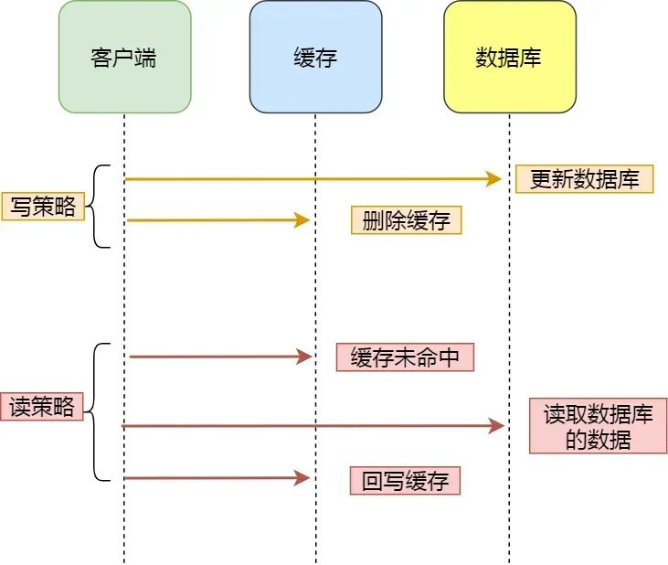
针对删除缓存异常的情况，我还会对 key 设置过期时间兜底，只要过期时间一到，过期的 key 就会被删除了。
除此之外，还有两种方式应对删除缓存失败的情况。
消息队列方案
我们可以引入消息队列，将第二个操作（删除缓存）要操作的数据加入到消息队列，由消费者来操作数据。
- 如果应用删除缓存失败，可以从消息队列中重新读取数据，然后再次删除缓存，这个就是重试机制。当然，如果重试超过的一定次数，还是没有成功，我们就需要向业务层发送报错信息了。
- 如果删除缓存成功，就要把数据从消息队列中移除，避免重复操作，否则就继续重试。
举个例子，来说明重试机制的过程。

订阅 MySQL binlog，再操作缓存
「先更新数据库，再删缓存」的策略的第一步是更新数据库，那么更新数据库成功，就会产生一条变更日志，记录在 binlog 里。
于是我们就可以通过订阅 binlog 日志，拿到具体要操作的数据，然后再执行缓存删除，阿里巴巴开源的 Canal 中间件就是基于这个实现的。
Canal 模拟 MySQL 主从复制的交互协议，把自己伪装成一个 MySQL 的从节点，向 MySQL 主节点发送 dump 请求，MySQL 收到请求后，就会开始推送 Binlog 给 Canal，Canal 解析 Binlog 字节流之后，转换为便于读取的结构化数据，供下游程序订阅使用。
下图是 Canal 的工作原理：
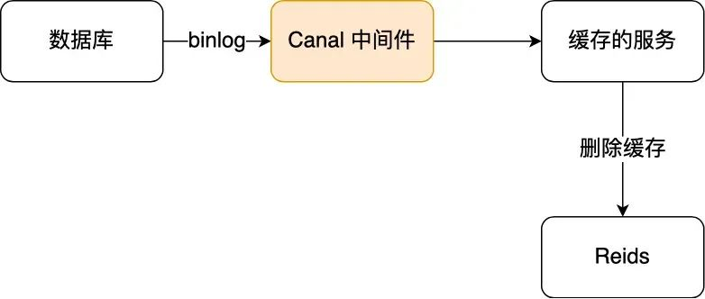
所以，如果要想保证「先更新数据库，再删缓存」策略第二个操作能执行成功，我们可以使用「消息队列来重试缓存的删除」，或者「订阅 MySQL binlog 再操作缓存」，这两种方法有一个共同的特点，都是采用异步操作缓存。- 设计一个基本的用户隐私设置功能
- 设计一个用户积分系统，怎么维护积分有效性和实现提醒功能？
- 追问：怎么进行数据库设计？怎么进行积分过期提醒？
12. 如何实现一个单点登录？
对于一个后端服务怎么提升性能
- 回答：讲了存储层面的使用中间缓存、网络框架设计优化
- 追问：提示长连接短连接
- 追问：怎么避免拷贝呢，不同的层面说说
- 回答：C++移动语义、零拷贝
- 追问：零拷贝的使用场景
- 追问：kafka了解吗
- 回答：不了解
- 追问：建议关注一下kafka，很快很好用
智力题
屋里四盏灯，屋外四个开关，一个开关仅控制一盏灯，屋外看不到屋里，怎样只进屋一次，就知道哪个开关控制哪盏
chatgpt 4.0 的回答：
为了找出哪个开关控制哪盏灯，你可以按照以下步骤操作：
- 先打开第一个开关，等待几分钟。
- 然后关闭第一个开关，打开第二个开关。
- 进入屋内。
现在你会看到以下情况：
- 一盏灯亮着：这盏灯是由第二个开关控制的。
- 一盏灯熄灭，但灯泡发热：这盏灯是由第一个开关控制的，因为它之前亮着但现在已经关闭。
- 剩下两盏灯熄灭且不发热：分别由第三个和第四个开关控制。
为了确定第三个和第四个开关分别控制哪盏灯，只需在屋内尝试打开其中一个。如果这盏灯亮起，那么就知道它由当前打开的开关控制，另一盏灯则由未尝试的开关控制。这样就可以在进屋一次的情况下，找出四个开关分别控制哪盏灯。
智力题
问题：一个装满水10升容量瓶子，一个7升空瓶子，一个3升空瓶子，平分为两瓶5升水。
如果要对一个很大的数据集，进行排序，而没办法一次性在内存排序，这时候怎么办？
可以使用外部排序来解决，基本思路分为两个阶段。
部分排序阶段。
我们根据内存大小，将待排序的文件拆成多个部分，使得每个部分都是足以存入内存中的。然后选择合适的内排序算法，将多个文件部分排序，并输出到容量可以更大的外存临时文件中，每个临时文件都是有序排列的，我们将其称之为一个“顺段”。
在第一个阶段部分排序中，由于内存可以装下每个顺段的所有元素，可以使用快速排序，时间复杂度是O(nlogn)。
归并阶段
我们对前面的多个“顺段”进行合并，思想和归并排序其实是一样的。以 2 路归并为例，每次都将两个连续的顺段合并成一个更大的顺段。
因为内存限制，每次可能只能读入两个顺段的部分内容，所以我们需要一部分一部分读入，在内存里将可以确定顺序的部分排列，并输出到外存里的文件中，不断重复这个过程，直至两个顺段被完整遍历。这样经过多层的归并之后，最终会得到一个完整的顺序文件。
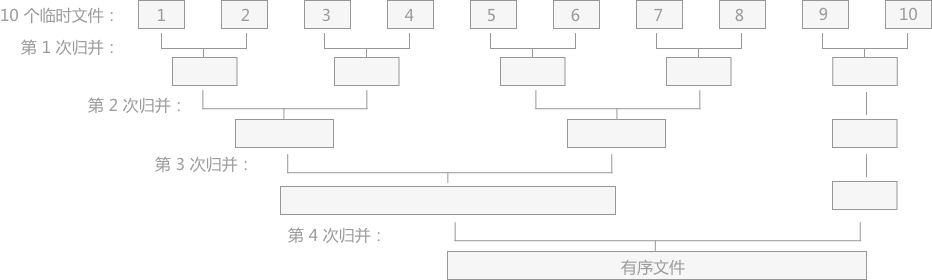
归并阶段有个非常大的时间消耗就是 IO，也就是输入输出。最好就是让归并的层数越低越好，为了降低降低归并层数，可以使用败者树。
败者树中的非终端结点中存储的是胜利（左右孩子相比较，谁最小即为胜者）的一方；而败者树中的非终端结点存储的是失败的一方。而在比较过程中，都是拿胜者去比较。
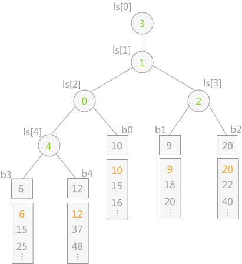
现在有了败者树的加持，多路归并排序就可以比较高效地解决外部排序的问题了。
大致思路就是：
- 先用内排序算法（比如快速排序），尽可能多的加载源文件，将其变成 n 个有序顺段。
- 在内存有限的前提下每 k 个文件为一组，每次流式地从各个文件中读取一个单词，借助败者树选出字典序最低的一个，输出到文件中，这样就可以将 k 个顺段合并到一个顺段中了；反复执行这样的操作，直至所有顺段被归并到同一个顺段。
如何解决库存超卖？
库存防超卖方案采用：Redis原子操作 + 异步扣减数据库
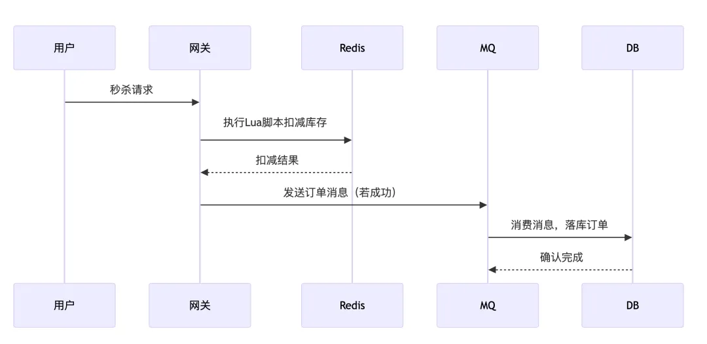
具体流程如下：
- 秒杀请求达到：用户发起秒杀请求，系统接收到请求后，首先进行一些基础校验（如用户身份验证、活动是否开始等）。如果校验通过，进入库存扣减逻辑。
-
Redis库存扣减：在Redis中检查商品库存是否充足。例如，使用
GET命令获取当前库存数量。如果库存不足，直接返回失败，结束流程。如果库存充足，使用Redis的原子操作（如DECR或Lua脚本）扣减库存。 - 异步更新数据库：如果Redis库存扣减成功，生成一个秒杀成功的消息，并将其放入消息队列
- 后台服务消费消息：后台服务从消息队列中消费秒杀成功的消息，执行以下操作：1、为用户创建订单记录；2、使用乐观锁将数据库中的库存数量减少1；3、通过唯一标识（如用户ID+商品ID+时间戳）防止重复消费。
- 最终一致性校验：在Redis库存扣减和数据库库存更新之间，可能会存在短暂的不一致状态。为了保证最终一致性，可以采取以下措施：1、定期将Redis中的库存数据与数据库进行同步。2、如果发现Redis和数据库库存不一致，触发补偿逻辑（如回滚订单或调整库存）。
秒杀怎么防止黄牛
- 验证码与滑块验证：在秒杀过程中设置验证码或滑块验证，要求用户完成特定的验证操作才能继续购买。验证码可以是数字、字母、图片等形式，滑块验证则需要用户通过拖动滑块来完成拼图或其他验证任务。这可以有效防止自动化脚本的批量操作，因为黄牛使用的机器人较难识别和处理验证码。
- 限制访问频率：对同一 IP 地址、同一账号或同一设备的访问频率进行限制。例如，规定每秒或每分钟内的请求次数上限，超过限制的请求将被拒绝。这样可以防止黄牛利用大量的请求来抢占商品。
11. 场景题
- 分布式部署下的的日志文件如何进行收集和分析
- 如何设计一个高可用的分布式系统
- 在线部署项目或者更新项目的时候可能会导致某些节点暂时不可用，如何解决
场景题：
- 如果要做一个分布式的调度系统，我们需要考虑哪些东西呢？
- 比如我可能有一个集群来调度保证高可用，你有什么想法？
6. 如何快速统计大文件中某个单词的出现次数？
常见的解决思路有三种：
- 字典树算法
- 构建字典树：遍历大文件，将文件中的每个单词依次插入到字典树中。在插入过程中，若单词已存在于字典树中，则对应节点的计数加 1；若不存在，则创建新的节点并将计数初始化为 1。
- 查询单词：构建好字典树后，直接查询目标单词在字典树中对应的节点，获取其计数，即可得到该单词在大文件中的出现次数。
- 哈希表算法
- 遍历文件：逐行读取大文件，对每行内容进行分割得到单词列表。然后遍历单词列表，对于每个单词，在哈希表中查找其是否已存在。
- 更新哈希表：若单词在哈希表中已存在，则将其对应的值（出现次数）加 1；若不存在，则将该单词作为键，出现次数初始化为 1，存入哈希表。
- 获取结果：遍历完整个文件后，在哈希表中查找目标单词对应的出现次数即可。
- 分治法
- 分割文件：将大文件分割成多个较小的子文件，使每个子文件能够被内存轻松处理。
- 并行统计：对每个子文件并行地进行单词统计，可以使用多线程或多进程来实现。在每个子文件中，可采用哈希表或其他简单的数据结构来统计单词出现的次数。
- 合并结果：将各个子文件的统计结果进行合并，得到大文件中目标单词的出现次数。
7. 手撕：随机红包功能。给定一个金额和人数，生成一个数组，表示每人分得的金钱值。要求最大金额不能超过总金额的90%且全部分完。
以下是Java实现的随机红包算法，满足最大金额不超过总金额的90%且全部分完：
import java.util.Arrays;
import java.util.concurrent.ThreadLocalRandom;
public class RedPacketGenerator {
public static double[] generateRedPacket(double total, int num) {
// 基础校验
if (num < 2) throw new IllegalArgumentException("至少需要2人");
if (total <= 0) throw new IllegalArgumentException("金额必须大于0");
// 转换为分处理避免浮点误差
long totalCents = Math.round(total * 100);
long maxAllowed = Math.round(total * 0.9 * 100);
// 校验约束条件
if (totalCents < num) throw new IllegalArgumentException("金额不足");
if (maxAllowed < 1) throw new IllegalArgumentException("金额过小无法满足最大限制");
long[] cents = new long[num];
long remaining = totalCents;
int left = num;
for (int i = 0; i < num - 1; i++) {
left--; // 剩余人数
// 动态计算取值范围
long min = Math.max(1, remaining - maxAllowed * left);
long max = Math.min(remaining - left * 1L, maxAllowed);
if (min > max) {
// 若无法满足条件（理论上不会触发，因校验已覆盖）
throw new IllegalStateException("无法生成满足条件的红包");
}
// 生成随机金额（含边界）
long current = ThreadLocalRandom.current().nextLong(min, max + 1);
cents[i] = current;
remaining -= current;
}
// 最后一人拿剩余金额
cents[num-1] = remaining;
// 最终校验（防御性编程）
if (Arrays.stream(cents).anyMatch(c -> c > maxAllowed)) {
throw new IllegalStateException("生成结果违反最大金额限制");
}
// 转换回元
return Arrays.stream(cents)
.mapToDouble(c -> c / 100.0)
.toArray();
}
public static void main(String[] args) {
// 示例用法
double[] packet = generateRedPacket(100.0, 5);
System.out.println("红包分配：" + Arrays.toString(packet));
System.out.println("总额验证：" + Arrays.stream(packet).sum());
}
}
算法的时间复杂度O(n)，空间复杂度O(n)，算法的特点是每次分配时动态计算：
- min = max(1, 剩余金额 - 最大允许值*剩余人数)
- max = min(剩余金额 - 每人保底分, 最大允许值)
输入输出示例：
-
输入：
generateRedPacket(100.0, 5) -
可能输出：
[89.99, 5.0, 2.5, 1.5, 1.01] - 验证：总和100元，最大金额89.99元 ≤ 90元（100*90%）
16. 商品秒杀功能怎么实现？如何避免超卖的？
秒杀场景的核心特点是高并发、低库存、短时间爆发式访问 。因此，设计时需要解决以下几个问题：
- 高并发处理 ：如何应对大量用户同时访问？
- 库存一致性 ：如何保证库存不会超卖或少卖？
- 用户体验 ：如何减少用户等待时间，避免页面崩溃？
- 防刷机制 ：如何防止恶意用户利用脚本抢购商品？
面对上面这些问题，可以针对每一层做一些设计：
1、前端层：
- 静态资源分离 ：将秒杀页面的静态资源（如HTML、CSS、JS）部署到CDN（内容分发网络），减轻服务器压力。
- 请求拦截：活动未开始时，前端按钮置灰；通过验证码、点击频率限制。
2、网关层：
- 流量拦截 ：使用API网关对请求进行初步过滤，例如IP限流、黑名单拦截等。
- 身份验证 ：通过Token或签名验证用户身份，防止未登录用户直接访问秒杀接口。
3、缓存层：
- Redis缓存库存 ：将商品库存信息存储在Redis中，利用其高性能特性处理库存扣减操作。
- 预热数据 ：在秒杀活动开始前，将商品信息和库存数据加载到Redis中，减少数据库压力。
4、消息队列：
- 削峰填谷 ：使用消息队列（如Kafka）将用户的秒杀请求异步化，避免直接冲击后端服务。
- 订单处理 ：将成功的秒杀请求放入队列，由后台服务异步生成订单，提高系统吞吐量。
5、数据库层
- 乐观锁：在库存扣减时，使用乐观锁确保库存一致性。
- 读写分离 ：通过主从复制实现数据库的读写分离，提升查询性能。
关键的核心业务逻辑实现，库存防超卖方案采用：Redis原子操作 + 异步扣减数据库。
具体流程如下：
- 秒杀请求达到：用户发起秒杀请求，系统接收到请求后，首先进行一些基础校验（如用户身份验证、活动是否开始等）。如果校验通过，进入库存扣减逻辑。
-
Redis库存扣减：在Redis中检查商品库存是否充足。例如，使用
GET命令获取当前库存数量。如果库存不足，直接返回失败，结束流程。如果库存充足，使用Redis的原子操作（如DECR或Lua脚本）扣减库存。 - 异步更新数据库：如果Redis库存扣减成功，生成一个秒杀成功的消息，并将其放入消息队列
- 后台服务消费消息：后台服务从消息队列中消费秒杀成功的消息，执行以下操作：
- 1、为用户创建订单记录；
- 2、使用乐观锁将数据库中的库存数量减少1；
- 3、通过唯一标识（如用户ID+商品ID+时间戳）防止重复消费。
- 最终一致性校验：在Redis库存扣减和数据库库存更新之间，可能会存在短暂的不一致状态。为了保证最终一致性，可以采取以下措施：
- 1、定期将Redis中的库存数据与数据库进行同步。
- 2、如果发现Redis和数据库库存不一致，触发补偿逻辑（如回滚订单或调整库存）。